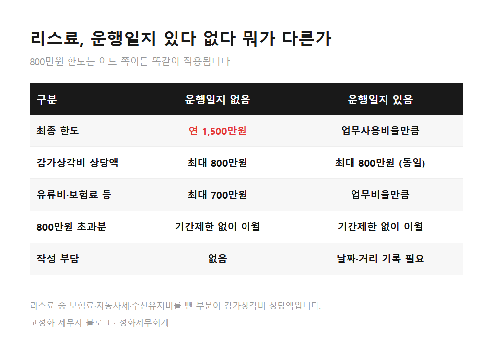
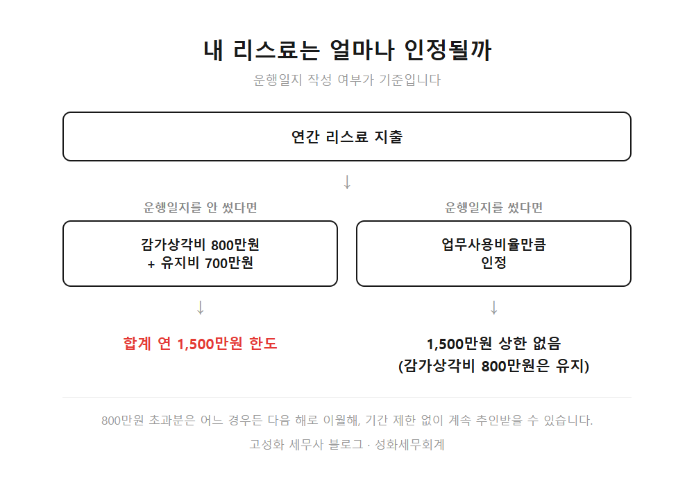
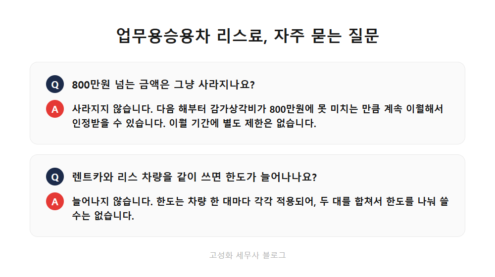

← 세무칼럼 목록
법인·기장

업무용승용차 리스료 800만원 한도, 운행일지 안쓰면 달라집니다
얼마 전 리스로 차량을 새로 계약하신 대표님이 상담을 요청하신 적이 있습니다.
월 리스료가 꽤 크니 그만큼 비용으로 다 인정될 거라 생각하셨는데, 계산해보니 예상보다 훨씬 적은 금액만 남더라고요.
이 부분, 저도 상담할 때마다 계산기를 다시 두드려보는 지점입니다.
이 글을 보고 계신 분은 아마 이런 상황이실 겁니다.
이 글에서 다루는 내용
- 리스료, 얼마까지 비용으로 인정될까
- 운행일지를 안 쓰면 얼마나 달라지나
한눈에 보기



자주 묻는 질문
리스료가 커도 무조건 연 800만원까지만 인정되나요?
감가상각비 상당액 기준으로는 그렇습니다. 다만 초과한 금액이 없어지는 건 아니고, 다음 해 이후로 감가상각비가 800만원에 못 미치는 만큼 계속 이월해서 인정받을 수 있습니다.
운행일지를 안 쓰면 800만원만 인정받는 건가요?
아닙니다. 운행일지가 없어도 유지비를 포함해서 연 1,500만원까지는 인정됩니다. 800만원은 그중 감가상각비 부분에만 걸리는 한도입니다.
렌트카와 리스 차량을 같이 쓰면 한도가 늘어나나요?
늘어나지 않습니다. 한도는 차량 한 대마다 각각 적용되기 때문에, 두 대를 합쳐서 한도를 나눠 쓰는 방식이 아닙니다.
정리하면
정리하면, 리스료는 운행일지를 쓰느냐에 따라 인정받는 금액이 크게 달라집니다.
쓰지 않으면 연 1,500만원, 쓰면 업무비율만큼, 그리고 감가상각비 800만원 초과분은 기간 제한 없이 계속 이월된다는 점만 기억해두시면 됩니다.
차량이 두 대 이상이라면 임직원전용보험도 함께 챙기셔야 합니다.
계산이 헷갈리시거나 지금 상황에 맞는 처리 방법이 궁금하시면 편하게 문의 주세요.
본문 전체와 근거 조문은 블로그에서 확인하실 수 있습니다.